library(future)
library(patchwork)
library(ranger)
library(rpart.plot)
library(tidymodels)
library(tidyverse)
library(xgboost)
set.seed(123)
# Location of the data files. Adjust this path if you keep the data
# files in a different directory.
DATA_DIR <- '../../data'Chapter 6: Statistical Machine Learning
Statistical Machine Learning
K-Nearest Neighbors
A Small Example: Predicting Loan Default
loan200 <- read_csv(file.path(DATA_DIR, "loan200.csv"), show_col_types = FALSE) %>%
mutate(outcome = factor(outcome, levels = c("paid off", "default")))
train_data <- loan200 %>% dplyr::slice(-1)
newloan <- loan200 %>% dplyr::slice(1)
model <- nearest_neighbor(mode = "classification", neighbors = 20,
weight_func = "rectangular")
knn_model <- workflow() %>%
add_model(model) %>%
add_formula(outcome ~ payment_inc_ratio + dti) %>%
fit(train_data)
knn_pred <- knn_model %>% predict(newloan)
knn_pred# A tibble: 1 × 1
.pred_class
<fct>
1 paid off Standardization (Normalization, z-Scores)
newloan# A tibble: 1 × 3
outcome payment_inc_ratio dti
<fct> <dbl> <dbl>
1 <NA> 9 22.5library(FNN)
loan_data <- read_csv(file.path(DATA_DIR, "loan_data.csv.gz"), show_col_types = FALSE) %>%
select(-c(index, status)) %>%
mutate(
across(where(is.character), as.factor),
outcome = factor(outcome, levels = c("paid off", "default"))
)
loan_df <- model.matrix(~ -1 + payment_inc_ratio + dti + revol_bal +
revol_util, data = loan_data)
newloan <- loan_df[1, , drop = FALSE]
loan_df <- loan_df[-1, ]
outcome <- loan_data[-1, ]$outcome
knn_pred <- knn(train = loan_df, test = newloan, cl = outcome, k = 5)
loan_df[attr(knn_pred, "nn.index"), ] payment_inc_ratio dti revol_bal revol_util
35537 1.47212 1.46 1686 10.0
33652 3.38178 6.37 1688 8.4
25864 2.36303 1.39 1691 3.5
42954 1.28160 7.14 1684 3.9
43600 4.12244 8.98 1684 7.2loan_df <- model.matrix(~ -1 + payment_inc_ratio + dti + revol_bal +
revol_util, data = loan_data)
loan_std <- scale(loan_df)
newloan_std <- loan_std[1, , drop = FALSE]
loan_std <- loan_std[-1, ]
loan_df <- loan_df[-1, ]
outcome <- loan_data[-1, ]$outcome
knn_pred <- knn(train = loan_std, test = newloan_std, cl = outcome, k = 5)
loan_df[attr(knn_pred, "nn.index"), ] payment_inc_ratio dti revol_bal revol_util
2081 2.61091 1.03 1218 9.7
1439 2.34343 0.51 278 9.9
30216 2.71200 1.34 1075 8.5
28543 2.39760 0.74 2917 7.4
44738 2.34309 1.37 488 7.2KNN as a Feature Engine
rec <- recipe(outcome ~ dti + revol_bal + revol_util + open_acc +
delinq_2yrs_zero + pub_rec_zero, data = loan_data)
model <- nearest_neighbor(mode = "classification", neighbors = 20,
weight_func = "rectangular")
borrow_knn <- workflow() %>%
add_model(nearest_neighbor(mode = "classification", neighbors = 20)) %>%
add_recipe(rec) %>%
fit(loan_data)
borrow_feature <- borrow_knn %>%
predict(loan_data, type = "prob") %>%
pluck(".pred_default")
summary(borrow_feature) Min. 1st Qu. Median Mean 3rd Qu. Max.
0.0000 0.3819 0.5017 0.5001 0.6200 1.0000 Tree Models
A Simple Example
loan3000 <- read_csv(file.path(DATA_DIR, "loan3000.csv"), show_col_types = FALSE) %>%
mutate(outcome = factor(outcome, levels = c("paid off", "default")))
loan_tree <- decision_tree(mode = "classification", engine = "rpart") %>%
fit(outcome ~ borrower_score + payment_inc_ratio, data = loan3000)
rpart.plot(loan_tree %>% extract_fit_engine(), roundint = FALSE)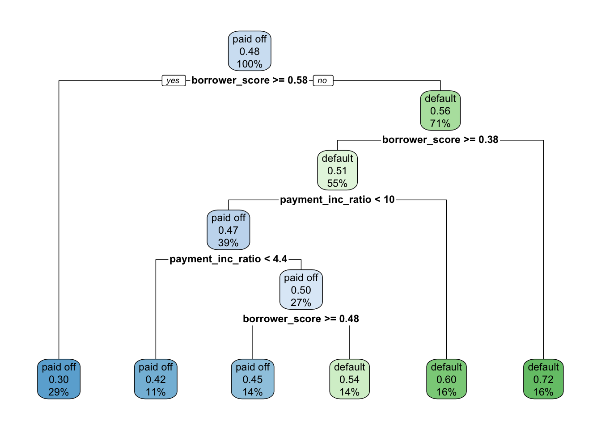
loan_treeparsnip model object
n= 3000
node), split, n, loss, yval, (yprob)
* denotes terminal node
1) root 3000 1445 paid off (0.5183333 0.4816667)
2) borrower_score>=0.575 878 261 paid off (0.7027335 0.2972665) *
3) borrower_score< 0.575 2122 938 default (0.4420358 0.5579642)
6) borrower_score>=0.375 1639 802 default (0.4893228 0.5106772)
12) payment_inc_ratio< 10.42265 1157 547 paid off (0.5272256 0.4727744)
24) payment_inc_ratio< 4.42601 334 139 paid off (0.5838323 0.4161677) *
25) payment_inc_ratio>=4.42601 823 408 paid off (0.5042527 0.4957473)
50) borrower_score>=0.475 418 190 paid off (0.5454545 0.4545455) *
51) borrower_score< 0.475 405 187 default (0.4617284 0.5382716) *
13) payment_inc_ratio>=10.42265 482 192 default (0.3983402 0.6016598) *
7) borrower_score< 0.375 483 136 default (0.2815735 0.7184265) *Bagging and the Random Forest
Random Forest
rf <- rand_forest(mode = "classification") %>%
set_engine("ranger", seed = 123) %>%
fit(outcome ~ borrower_score + payment_inc_ratio, data = loan3000)
rfparsnip model object
Ranger result
Call:
ranger::ranger(x = maybe_data_frame(x), y = y, seed = ~123, num.threads = 1, verbose = FALSE, probability = TRUE)
Type: Probability estimation
Number of trees: 500
Sample size: 3000
Number of independent variables: 2
Mtry: 1
Target node size: 10
Variable importance mode: none
Splitrule: gini
OOB prediction error (Brier s.): 0.2300053 num_trees <- c(1, seq(5, 500, 5))
oob_scores <- c()
for (trees in num_trees) {
rf <- rand_forest(mode = "classification", trees = trees) %>%
set_engine("ranger", seed = 123) %>%
fit(outcome ~ borrower_score + payment_inc_ratio, data = loan3000)
oob_scores <- c(oob_scores, (rf %>% extract_fit_engine())$prediction.error)
}
error_df <- tibble(error_rate = oob_scores, num_trees = num_trees)
ggplot(error_df, aes(x = num_trees, y = error_rate)) +
geom_line()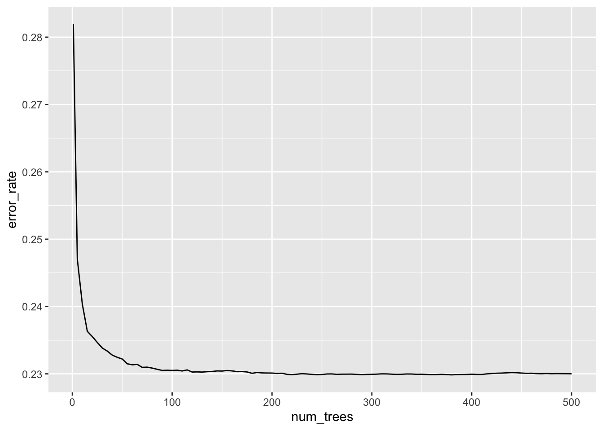
rf_df <- augment(rf, loan3000)
ggplot(data = rf_df, aes(x = borrower_score, y = payment_inc_ratio,
shape = .pred_class, color = .pred_class, size = .pred_class)) +
geom_jitter(alpha = 0.8, height = 0, width = 0.003) +
scale_color_manual(values = c("paid off" = "#b8e186", "default" = "#d95f02")) +
scale_shape_manual(values = c("paid off" = 0, "default" = 1)) +
scale_size_manual(values = c("paid off" = 0.5, "default" = 2))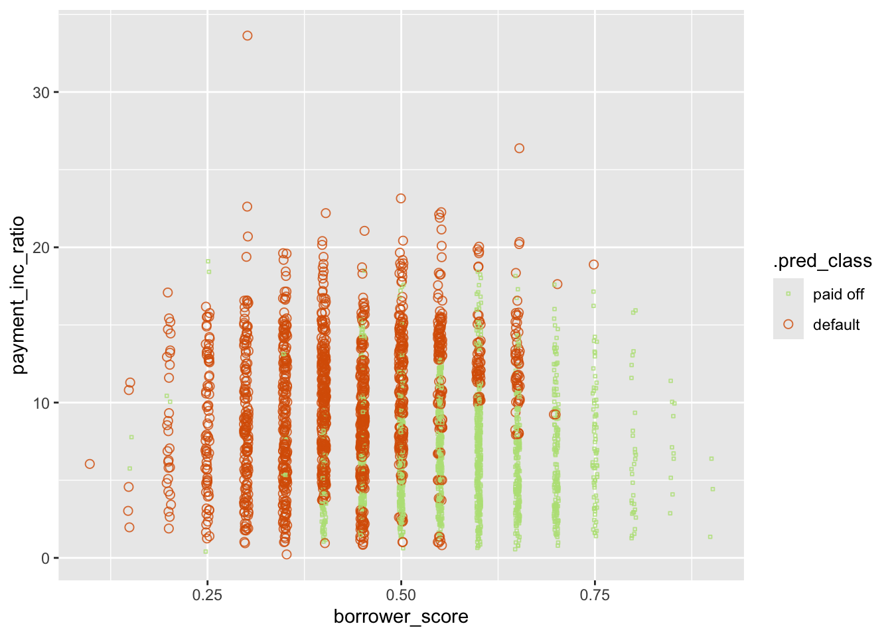
Variable Importance
rf_all <- rand_forest(mode = "classification") %>%
set_engine("ranger", seed = 123, importance = "impurity") %>%
fit(outcome ~ ., data = loan_data)
rf_allparsnip model object
Ranger result
Call:
ranger::ranger(x = maybe_data_frame(x), y = y, seed = ~123, importance = ~"impurity", num.threads = 1, verbose = FALSE, probability = TRUE)
Type: Probability estimation
Number of trees: 500
Sample size: 45342
Number of independent variables: 18
Mtry: 4
Target node size: 10
Variable importance mode: impurity
Splitrule: gini
OOB prediction error (Brier s.): 0.2123043 rf_permutation <- rand_forest(mode = "classification") %>%
set_engine("ranger", seed = 123, importance = "permutation") %>%
fit(outcome ~ ., data = loan_data)varimp_gini <- importance(rf_all %>% extract_fit_engine())
varimp_perm <- importance(rf_permutation %>% extract_fit_engine())
df <- tibble(
predictor = names(varimp_gini),
impurity = varimp_gini,
permutation = varimp_perm
)
g1 <- ggplot(df, aes(x = permutation, y = reorder(predictor, permutation))) +
geom_point() +
labs(y = "Importance", title = "Accuracy Decrease")
g2 <- ggplot(df, aes(x = impurity, y = reorder(predictor, permutation))) +
geom_point() +
labs(y = "Importance", title = "Gini Decrease")
(g1 + theme_bw()) / (g2 + theme_bw())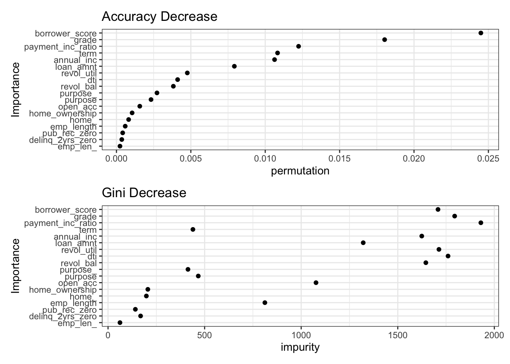
Boosting
XGBoost
xgb <- boost_tree(mode = "classification",
trees = 100, learn_rate = 0.1, sample_size = 0.63) %>%
fit(outcome ~ borrower_score + payment_inc_ratio, data = loan3000)xgb_df <- augment(xgb, loan3000)
ggplot(data = xgb_df, aes(x = borrower_score, y = payment_inc_ratio,
color = .pred_class, shape = .pred_class, size = .pred_class)) +
geom_jitter(alpha = 0.8, height = 0, width = 0.003) +
scale_color_manual(values = c("paid off" = "#b8e186", "default" = "#d95f02")) +
scale_shape_manual(values = c("paid off" = 0, "default" = 1)) +
scale_size_manual(values = c("paid off" = 0.5, "default" = 2))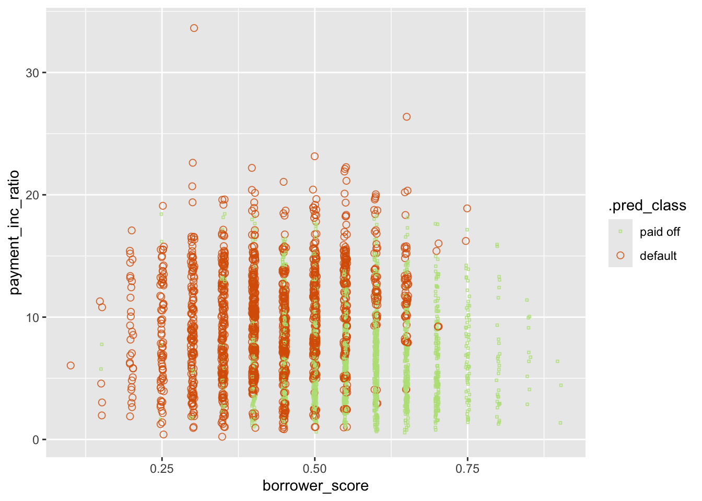
Regularization: Avoiding Overfitting
set.seed(400820)
loan_split <- initial_split(loan_data, prop = 0.75)
train_data <- training(loan_split)
test_data <- testing(loan_split)
train_x <- data.matrix(train_data %>% select(-outcome))
train_y <- factor(train_data$outcome, levels = c("paid off", "default"))
test_x <- data.matrix(test_data %>% select(-outcome))
test_y <- factor(test_data$outcome, levels = c("paid off", "default"))
xgb_default <- xgboost(x = train_x, y = train_y,
objective = "binary:logistic", nrounds = 250, verbosity = 1,
eval_metric = "error")[1] train-error:0.336646
[2] train-error:0.329677
[3] train-error:0.326031
[4] train-error:0.321355
[5] train-error:0.320032
[6] train-error:0.317356
[7] train-error:0.315915
[8] train-error:0.313739
[9] train-error:0.312445
[10] train-error:0.311386
[11] train-error:0.308740
[12] train-error:0.306769
[13] train-error:0.303946
[14] train-error:0.302711
[15] train-error:0.299712
[16] train-error:0.298653
[17] train-error:0.297065
[18] train-error:0.296859
[19] train-error:0.294183
[20] train-error:0.293419
[21] train-error:0.292801
[22] train-error:0.290508
[23] train-error:0.290213
[24] train-error:0.288390
[25] train-error:0.288008
[26] train-error:0.287067
[27] train-error:0.284656
[28] train-error:0.283450
[29] train-error:0.281597
[30] train-error:0.280421
[31] train-error:0.279627
[32] train-error:0.278304
[33] train-error:0.275745
[34] train-error:0.274540
[35] train-error:0.274246
[36] train-error:0.273716
[37] train-error:0.273099
[38] train-error:0.271599
[39] train-error:0.268953
[40] train-error:0.267659
[41] train-error:0.265659
[42] train-error:0.264336
[43] train-error:0.262689
[44] train-error:0.260983
[45] train-error:0.259013
[46] train-error:0.257925
[47] train-error:0.255955
[48] train-error:0.255014
[49] train-error:0.254573
[50] train-error:0.253338
[51] train-error:0.252161
[52] train-error:0.251220
[53] train-error:0.249574
[54] train-error:0.249044
[55] train-error:0.248133
[56] train-error:0.246604
[57] train-error:0.246162
[58] train-error:0.245398
[59] train-error:0.245339
[60] train-error:0.243516
[61] train-error:0.242751
[62] train-error:0.241252
[63] train-error:0.240752
[64] train-error:0.239752
[65] train-error:0.238193
[66] train-error:0.237282
[67] train-error:0.236223
[68] train-error:0.234812
[69] train-error:0.233518
[70] train-error:0.232606
[71] train-error:0.232077
[72] train-error:0.230753
[73] train-error:0.230048
[74] train-error:0.228607
[75] train-error:0.227989
[76] train-error:0.227372
[77] train-error:0.225695
[78] train-error:0.224813
[79] train-error:0.224519
[80] train-error:0.223519
[81] train-error:0.221461
[82] train-error:0.220814
[83] train-error:0.220373
[84] train-error:0.218608
[85] train-error:0.218138
[86] train-error:0.217932
[87] train-error:0.217315
[88] train-error:0.216991
[89] train-error:0.216050
[90] train-error:0.215344
[91] train-error:0.214462
[92] train-error:0.213286
[93] train-error:0.211580
[94] train-error:0.211492
[95] train-error:0.210610
[96] train-error:0.210198
[97] train-error:0.209463
[98] train-error:0.209198
[99] train-error:0.208199
[100] train-error:0.207434
[101] train-error:0.206581
[102] train-error:0.205346
[103] train-error:0.204905
[104] train-error:0.204317
[105] train-error:0.203052
[106] train-error:0.202053
[107] train-error:0.200729
[108] train-error:0.199406
[109] train-error:0.198553
[110] train-error:0.198524
[111] train-error:0.198024
[112] train-error:0.197642
[113] train-error:0.196877
[114] train-error:0.195583
[115] train-error:0.194848
[116] train-error:0.194083
[117] train-error:0.192260
[118] train-error:0.191025
[119] train-error:0.190584
[120] train-error:0.190114
[121] train-error:0.188761
[122] train-error:0.188555
[123] train-error:0.188408
[124] train-error:0.187673
[125] train-error:0.186320
[126] train-error:0.185732
[127] train-error:0.185644
[128] train-error:0.185203
[129] train-error:0.183821
[130] train-error:0.183291
[131] train-error:0.182585
[132] train-error:0.181644
[133] train-error:0.180645
[134] train-error:0.179792
[135] train-error:0.179086
[136] train-error:0.178027
[137] train-error:0.177116
[138] train-error:0.177116
[139] train-error:0.176263
[140] train-error:0.176087
[141] train-error:0.175234
[142] train-error:0.174999
[143] train-error:0.174263
[144] train-error:0.173205
[145] train-error:0.172470
[146] train-error:0.171529
[147] train-error:0.170352
[148] train-error:0.169794
[149] train-error:0.169235
[150] train-error:0.168676
[151] train-error:0.168235
[152] train-error:0.167529
[153] train-error:0.166471
[154] train-error:0.165853
[155] train-error:0.165030
[156] train-error:0.164442
[157] train-error:0.163559
[158] train-error:0.162883
[159] train-error:0.162677
[160] train-error:0.162148
[161] train-error:0.161883
[162] train-error:0.161560
[163] train-error:0.159913
[164] train-error:0.158707
[165] train-error:0.157560
[166] train-error:0.157031
[167] train-error:0.157119
[168] train-error:0.156325
[169] train-error:0.155737
[170] train-error:0.154914
[171] train-error:0.154296
[172] train-error:0.153649
[173] train-error:0.153061
[174] train-error:0.152120
[175] train-error:0.151414
[176] train-error:0.150944
[177] train-error:0.150179
[178] train-error:0.149856
[179] train-error:0.149503
[180] train-error:0.149180
[181] train-error:0.147327
[182] train-error:0.146592
[183] train-error:0.145974
[184] train-error:0.145004
[185] train-error:0.144416
[186] train-error:0.144210
[187] train-error:0.143622
[188] train-error:0.143151
[189] train-error:0.143239
[190] train-error:0.142122
[191] train-error:0.141269
[192] train-error:0.140710
[193] train-error:0.139740
[194] train-error:0.139828
[195] train-error:0.139093
[196] train-error:0.138299
[197] train-error:0.137093
[198] train-error:0.137182
[199] train-error:0.137123
[200] train-error:0.137005
[201] train-error:0.136799
[202] train-error:0.135947
[203] train-error:0.135270
[204] train-error:0.133947
[205] train-error:0.133241
[206] train-error:0.132859
[207] train-error:0.131477
[208] train-error:0.130095
[209] train-error:0.129948
[210] train-error:0.129507
[211] train-error:0.129007
[212] train-error:0.128713
[213] train-error:0.128213
[214] train-error:0.127713
[215] train-error:0.127036
[216] train-error:0.126448
[217] train-error:0.126272
[218] train-error:0.125948
[219] train-error:0.125360
[220] train-error:0.125096
[221] train-error:0.124302
[222] train-error:0.123596
[223] train-error:0.123449
[224] train-error:0.122919
[225] train-error:0.122008
[226] train-error:0.121420
[227] train-error:0.120979
[228] train-error:0.120214
[229] train-error:0.119744
[230] train-error:0.118773
[231] train-error:0.118097
[232] train-error:0.117215
[233] train-error:0.117038
[234] train-error:0.116215
[235] train-error:0.115715
[236] train-error:0.115244
[237] train-error:0.114597
[238] train-error:0.114215
[239] train-error:0.113451
[240] train-error:0.112598
[241] train-error:0.112333
[242] train-error:0.112627
[243] train-error:0.112392
[244] train-error:0.112098
[245] train-error:0.111304
[246] train-error:0.110657
[247] train-error:0.110363
[248] train-error:0.110039
[249] train-error:0.109392
[250] train-error:0.108775 pred_default <- predict(xgb_default, test_x)
error_default <- abs((as.numeric(test_y) - 1) - pred_default) > 0.5
attributes(xgb_default)$evaluation_log[250, ] iter train_error
<num> <num>
1: 250 0.1087749mean(error_default)[1] 0.3591214xgb_penalty <- xgboost(x = train_x, y = train_y,
learning_rate = 0.1, subsample = 0.63, reg_lambda = 1000,
objective = "binary:logistic", nrounds = 250, verbosity = 1,
eval_metric = "error")[1] train-error:0.363730
[2] train-error:0.344116
[3] train-error:0.342969
[4] train-error:0.340116
[5] train-error:0.338646
[6] train-error:0.334882
[7] train-error:0.336411
[8] train-error:0.336588
[9] train-error:0.336911
[10] train-error:0.336999
[11] train-error:0.335588
[12] train-error:0.337176
[13] train-error:0.335794
[14] train-error:0.334529
[15] train-error:0.335676
[16] train-error:0.334147
[17] train-error:0.334323
[18] train-error:0.333970
[19] train-error:0.334323
[20] train-error:0.334706
[21] train-error:0.334118
[22] train-error:0.333765
[23] train-error:0.333118
[24] train-error:0.332765
[25] train-error:0.331294
[26] train-error:0.331294
[27] train-error:0.331353
[28] train-error:0.331324
[29] train-error:0.331236
[30] train-error:0.330559
[31] train-error:0.330530
[32] train-error:0.329854
[33] train-error:0.328971
[34] train-error:0.329060
[35] train-error:0.328530
[36] train-error:0.329089
[37] train-error:0.328471
[38] train-error:0.328413
[39] train-error:0.328295
[40] train-error:0.328354
[41] train-error:0.328030
[42] train-error:0.327677
[43] train-error:0.327530
[44] train-error:0.326913
[45] train-error:0.327178
[46] train-error:0.327295
[47] train-error:0.327295
[48] train-error:0.326678
[49] train-error:0.326413
[50] train-error:0.326119
[51] train-error:0.326678
[52] train-error:0.326913
[53] train-error:0.326442
[54] train-error:0.326119
[55] train-error:0.325795
[56] train-error:0.326060
[57] train-error:0.325884
[58] train-error:0.325472
[59] train-error:0.325296
[60] train-error:0.325119
[61] train-error:0.324943
[62] train-error:0.324796
[63] train-error:0.324355
[64] train-error:0.324619
[65] train-error:0.324472
[66] train-error:0.324119
[67] train-error:0.324443
[68] train-error:0.324266
[69] train-error:0.324119
[70] train-error:0.323708
[71] train-error:0.323913
[72] train-error:0.323472
[73] train-error:0.323855
[74] train-error:0.323825
[75] train-error:0.323855
[76] train-error:0.324237
[77] train-error:0.324031
[78] train-error:0.323796
[79] train-error:0.323590
[80] train-error:0.323590
[81] train-error:0.323561
[82] train-error:0.323296
[83] train-error:0.322855
[84] train-error:0.323002
[85] train-error:0.322825
[86] train-error:0.322649
[87] train-error:0.322473
[88] train-error:0.322267
[89] train-error:0.322561
[90] train-error:0.322502
[91] train-error:0.322296
[92] train-error:0.321884
[93] train-error:0.321826
[94] train-error:0.321737
[95] train-error:0.321826
[96] train-error:0.321855
[97] train-error:0.321679
[98] train-error:0.321767
[99] train-error:0.321414
[100] train-error:0.321502
[101] train-error:0.321561
[102] train-error:0.321237
[103] train-error:0.321326
[104] train-error:0.321090
[105] train-error:0.321032
[106] train-error:0.320532
[107] train-error:0.320826
[108] train-error:0.321002
[109] train-error:0.321179
[110] train-error:0.320796
[111] train-error:0.320826
[112] train-error:0.320943
[113] train-error:0.320796
[114] train-error:0.320590
[115] train-error:0.320738
[116] train-error:0.320826
[117] train-error:0.320355
[118] train-error:0.320414
[119] train-error:0.320649
[120] train-error:0.320267
[121] train-error:0.320385
[122] train-error:0.320502
[123] train-error:0.320473
[124] train-error:0.320208
[125] train-error:0.320355
[126] train-error:0.320149
[127] train-error:0.319944
[128] train-error:0.319944
[129] train-error:0.319973
[130] train-error:0.319738
[131] train-error:0.319855
[132] train-error:0.319738
[133] train-error:0.319649
[134] train-error:0.319708
[135] train-error:0.319708
[136] train-error:0.319473
[137] train-error:0.319208
[138] train-error:0.319179
[139] train-error:0.319120
[140] train-error:0.319032
[141] train-error:0.318797
[142] train-error:0.318708
[143] train-error:0.318738
[144] train-error:0.319032
[145] train-error:0.318620
[146] train-error:0.318503
[147] train-error:0.318238
[148] train-error:0.318091
[149] train-error:0.317973
[150] train-error:0.318062
[151] train-error:0.318297
[152] train-error:0.318150
[153] train-error:0.318297
[154] train-error:0.317856
[155] train-error:0.318091
[156] train-error:0.317709
[157] train-error:0.317620
[158] train-error:0.317591
[159] train-error:0.317738
[160] train-error:0.317503
[161] train-error:0.317562
[162] train-error:0.317268
[163] train-error:0.317297
[164] train-error:0.317003
[165] train-error:0.317003
[166] train-error:0.317121
[167] train-error:0.316885
[168] train-error:0.316621
[169] train-error:0.316621
[170] train-error:0.316709
[171] train-error:0.316474
[172] train-error:0.316268
[173] train-error:0.316385
[174] train-error:0.316062
[175] train-error:0.316474
[176] train-error:0.316444
[177] train-error:0.316179
[178] train-error:0.315944
[179] train-error:0.316091
[180] train-error:0.316032
[181] train-error:0.315768
[182] train-error:0.315915
[183] train-error:0.315974
[184] train-error:0.316268
[185] train-error:0.315621
[186] train-error:0.315768
[187] train-error:0.315797
[188] train-error:0.315650
[189] train-error:0.315474
[190] train-error:0.315533
[191] train-error:0.315297
[192] train-error:0.315268
[193] train-error:0.315033
[194] train-error:0.315003
[195] train-error:0.315003
[196] train-error:0.315268
[197] train-error:0.314915
[198] train-error:0.314386
[199] train-error:0.314533
[200] train-error:0.314092
[201] train-error:0.314121
[202] train-error:0.314209
[203] train-error:0.314121
[204] train-error:0.314209
[205] train-error:0.314033
[206] train-error:0.314003
[207] train-error:0.313886
[208] train-error:0.313886
[209] train-error:0.313768
[210] train-error:0.313886
[211] train-error:0.313798
[212] train-error:0.313915
[213] train-error:0.313356
[214] train-error:0.313209
[215] train-error:0.313592
[216] train-error:0.313151
[217] train-error:0.313445
[218] train-error:0.313356
[219] train-error:0.313474
[220] train-error:0.313474
[221] train-error:0.313356
[222] train-error:0.313151
[223] train-error:0.313062
[224] train-error:0.312680
[225] train-error:0.312886
[226] train-error:0.313180
[227] train-error:0.312915
[228] train-error:0.312474
[229] train-error:0.312504
[230] train-error:0.312415
[231] train-error:0.312474
[232] train-error:0.312092
[233] train-error:0.311592
[234] train-error:0.311827
[235] train-error:0.311739
[236] train-error:0.311769
[237] train-error:0.311798
[238] train-error:0.311474
[239] train-error:0.311621
[240] train-error:0.311621
[241] train-error:0.311416
[242] train-error:0.310916
[243] train-error:0.311092
[244] train-error:0.311092
[245] train-error:0.310769
[246] train-error:0.310975
[247] train-error:0.310504
[248] train-error:0.310680
[249] train-error:0.310181
[250] train-error:0.310210 pred_penalty <- predict(xgb_penalty, test_x)
error_penalty <- abs((as.numeric(test_y) - 1) - pred_penalty) > 0.5
attributes(xgb_penalty)$evaluation_log[250, ] iter train_error
<num> <num>
1: 250 0.31021mean(error_penalty)[1] 0.3300988error_default <- rep(0, 249)
error_penalty <- rep(0, 249)
for (ntree_limit in 1:249) {
iteration_range <- c(1, ntree_limit + 1)
pred_def <- predict(xgb_default, test_x, iteration_range = iteration_range)
error_default[ntree_limit] <- mean(abs(as.numeric(test_y)-1-pred_def) >= 0.5)
pred_pen <- predict(xgb_penalty, test_x, iteration_range = iteration_range)
error_penalty[ntree_limit] <- mean(abs(as.numeric(test_y)-1-pred_pen) >= 0.5)
}errors <- bind_rows(
tibble(Iterations = 1:250, Dataset = "train", Penalty = "no",
Error = attributes(xgb_default)$evaluation_log$train_error),
tibble(Iterations = 1:249, Dataset = "test", Penalty = "no",
Error = error_default),
tibble(Iterations = 1:250, Dataset = "train", Penalty = "yes",
Error = attributes(xgb_penalty)$evaluation_log$train_error),
tibble(Iterations = 1:249, Dataset = "test", Penalty = "yes",
Error = error_penalty),
)
ggplot(errors, aes(x = Iterations, y = Error, color = Penalty,
linetype = Dataset)) +
geom_line() +
scale_color_manual(values = c("red", "black"))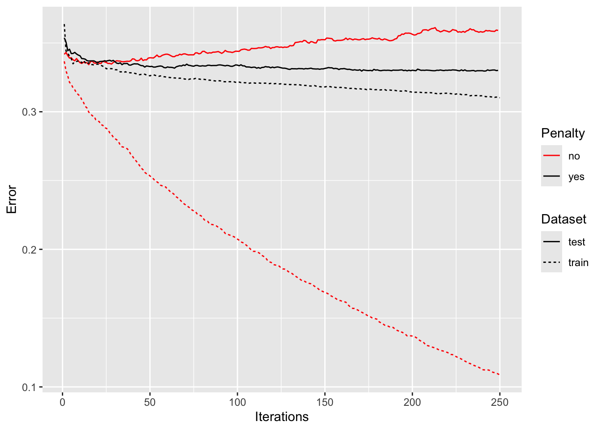
last_plot() +
theme_bw() +
annotate("text", 165, 0.2, label="Default / Training set") +
annotate("text", 150, 0.3, label="Penalty / Training set") +
annotate("text", 220, 0.34, label="Penalty / Test set") +
annotate("text", 75, 0.36, label="Default / Test set") +
theme(legend.position = "none")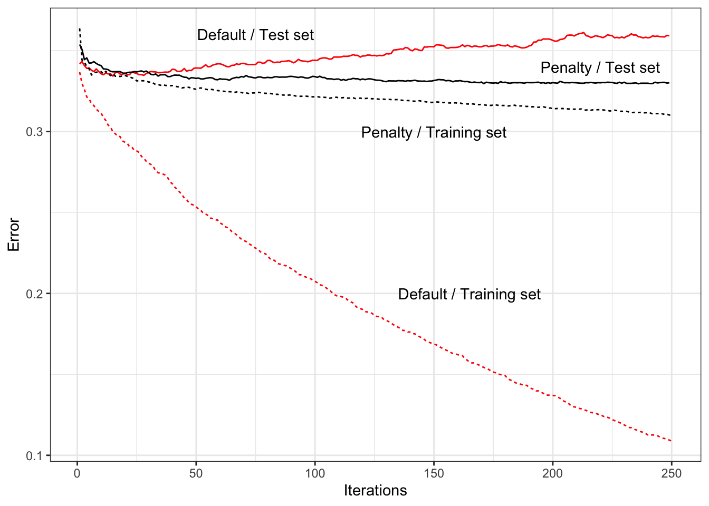
Hyperparameters and Cross-Validation
set.seed(1234)
resamples <- vfold_cv(loan_data, v = 5)
grid <- crossing(
tree_depth = c(3, 6, 12),
learn_rate = c(0.1, 0.5, 0.9),
)plan(multisession, workers = parallel::detectCores(logical = FALSE))
rec <- recipe(outcome ~ ., data = loan_data) %>%
step_dummy(all_nominal_predictors())
model <- boost_tree(mode = "classification",
tree_depth = tune(), learn_rate = tune())
wf <- workflow() %>%
add_model(model) %>%
add_recipe(rec)
model_cv <- tune_grid(wf, resamples, grid = grid)collect_metrics(model_cv) %>%
filter(.metric == "accuracy") %>%
mutate(error_rate = round(100 * (1 - mean), 2)) %>%
select(c(tree_depth, learn_rate, error_rate)) %>%
arrange(error_rate)# A tibble: 9 × 3
tree_depth learn_rate error_rate
<dbl> <dbl> <dbl>
1 3 0.5 33.3
2 3 0.9 33.5
3 6 0.1 33.5
4 6 0.5 33.8
5 3 0.1 34.2
6 12 0.1 34.7
7 6 0.9 34.9
8 12 0.5 36.4
9 12 0.9 38.8Supplementary Material
Figure 6-2. KNN prediction of loan default using two variables: debt-to-income ratio and loan-payment-to-income ratio
train_data <- loan200 %>%
dplyr::slice(-1)
newloan <- loan200 %>%
dplyr::slice(1) %>%
select(payment_inc_ratio, dti)
# The knn function from the class package gives us access to a list of the nearest
# neighbors and their distances via attributes "nn.index" and "nn.dist"
knn_pred <- knn(train = train_data[c("payment_inc_ratio", "dti")], test = newloan,
cl = train_data$outcome, k = 20)
nearest_points <- loan200[c(attr(knn_pred, "nn.index") + 1), ]
nearest_points# A tibble: 20 × 3
outcome payment_inc_ratio dti
<fct> <dbl> <dbl>
1 default 8.66 22.2
2 default 9.06 21.6
3 paid off 9.45 23.3
4 default 8.71 24.1
5 default 9.43 24.2
6 default 8.03 20.9
7 default 6.92 22.5
8 paid off 9.64 20.2
9 paid off 7.70 24.6
10 paid off 11.5 21.4
11 paid off 8.65 19.8
12 paid off 11.9 22.5
13 paid off 9.52 19.7
14 paid off 7.90 19.7
15 paid off 10.2 25.5
16 default 5.82 22
17 default 12.4 22.2
18 paid off 5.62 22.4
19 paid off 8.16 19.1
20 default 10.0 19.1dist <- attr(knn_pred, "nn.dist")
circle_coordinates <- function(center = c(0, 0), r = 1, npoints = 100) {
tt <- seq(0, 2 * pi, length.out = npoints - 1)
xx <- center[1] + r * cos(tt)
yy <- center[2] + r * sin(tt)
return(data.frame(x = c(xx, xx[1]), y = c(yy, yy[1])))
}
circle_df <- circle_coordinates(center = unlist(newloan), r = max(dist),
npoints = 201)# set first entry as target - requires adding additional level to factor
levels(loan200$outcome) <- c(levels(loan200$outcome), "newloan")
loan200[1, "outcome"] <- "newloan"
head(loan200)# A tibble: 6 × 3
outcome payment_inc_ratio dti
<fct> <dbl> <dbl>
1 newloan 9 22.5
2 default 5.47 21.3
3 paid off 6.90 8.97
4 paid off 11.1 1.83
5 default 3.72 10.8
6 paid off 1.90 11.3 levels(nearest_points$outcome)[1] "paid off" "default" graph <- ggplot(data = loan200, aes(x = payment_inc_ratio, y = dti, color = outcome)) +
geom_point(aes(shape = outcome), size = 2, alpha = 0.4) +
geom_point(data = nearest_points, aes(shape = outcome), size = 2) +
geom_point(data = loan200[1, ], aes(shape = outcome), size = 2) +
scale_shape_manual(values = c(15, 16, 4)) +
scale_color_manual(values = c("paid off" = "#1b9e77", "default" = "#d95f02", "newloan" = "black")) +
geom_path(data = circle_df, aes(x = x, y = y), color = "black") +
coord_cartesian(xlim = c(3, 15), ylim = c(17, 29)) +
theme_bw()
graph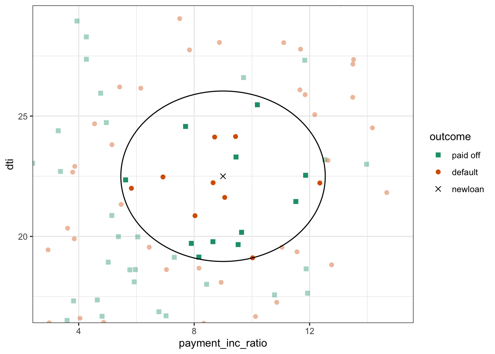
Figure 6-4. The first five rules for a simple tree model fit to the loan data
## Figure 6-4: View of partition rules
r_tree <- tibble(
x1 = c(0.575, 0.375, 0.375, 0.375, 0.475),
x2 = c(0.575, 0.375, 0.575, 0.575, 0.475),
y1 = c(0, 0, 10.42, 4.426, 4.426),
y2 = c(25, 25, 10.42, 4.426, 10.42),
rule_number = factor(c(1, 2, 3, 4, 5)))
r_tree <- as.data.frame(r_tree)
rules <- tibble(
x = c(0.575, 0.375, 0.4, 0.4, 0.475),
y = c(24, 24, 10.42, 4.426, 9.42),
rule_number = factor(c(1, 2, 3, 4, 5))
)
labs <- tibble(
x = c(
0.575 + (1 - 0.575) / 2,
0.375 / 2,
(0.375 + 0.575) / 2,
(0.375 + 0.575) / 2,
(0.475 + 0.575) / 2,
(0.375 + 0.475) / 2
),
y = c(
12.5,
12.5,
10.42 + (25 - 10.42) / 2,
4.426 / 2,
4.426 + (10.42 - 4.426) / 2,
4.426 + (10.42 - 4.426) / 2
),
decision = factor(c(
"paid off",
"default",
"default",
"paid off",
"paid off",
"default"
))
)shift <- 0.004
shift <- 0
graph <- loan3000 %>%
# mutate(borrower_score = ifelse(outcome == "paid off", borrower_score + shift, borrower_score - shift)) %>%
mutate(
borrower_score = borrower_score + rnorm(dim(loan3000)[1], sd = 2 * shift)
) %>%
ggplot(aes(x = borrower_score, y = payment_inc_ratio)) +
geom_point(aes(color = outcome, size = outcome, shape = outcome), alpha = 0.5) +
# scale_color_manual(values = c("paid off" = "#7fbc41", "default" = "#d95f02")) +
scale_shape_manual(values = c("paid off" = 0, "default" = 1)) +
scale_size_manual(values = c("paid off" = 1, "default" = 1)) +
geom_segment(data = r_tree, aes(x = x1, y = y1, xend = x2, yend = y2), linewidth = 1.5) +
guides(color = guide_legend(override.aes = list(linewidth = 1.5)),
linetype = guide_legend(keywidth = 3, override.aes = list(linewidth = 1))) +
scale_x_continuous(expand = c(0, 0)) +
scale_y_continuous(expand = c(0, 0)) +
coord_cartesian(ylim = c(0, 25)) +
geom_label(data = labs, aes(x = x, y = y, label = decision)) +
geom_label(data = rules, aes(x = x, y = y, label = rule_number),
size = 2.5, fill = "#eeeeee",
label.r = unit(0, "lines"), label.padding = unit(0.2, "lines")) +
guides(color = guide_legend(override.aes = list(size = 2))) +
stat_density_2d(aes(linetype = outcome, color = outcome),
# variation geom = "polygon",
# variation aes(alpha = 0.1 * ..level.., fill = outcome),
bins = 6) +
theme_bw()
graph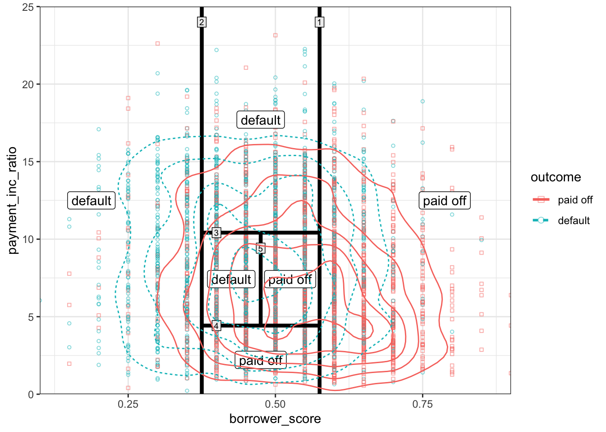
graph <- ggplot(data = loan3000, aes(x = borrower_score, y = payment_inc_ratio)) +
geom_point(aes(color = outcome, shape = outcome, size = outcome), alpha = 0.8) +
scale_color_manual(values = c("paid off" = "#7fbc41", "default" = "#d95f02")) +
scale_shape_manual(values = c("paid off" = 0, "default" = 1)) +
scale_size_manual(values = c("paid off" = 0.5, "default" = 2)) +
geom_segment(data = r_tree, aes(x = x1, y = y1, xend = x2, yend = y2), size = 1.5) +
guides(color = guide_legend(override.aes = list(size = 1.5)),
linetype = guide_legend(keywidth = 3, override.aes = list(size = 1))) +
scale_x_continuous(expand = c(0, 0)) +
scale_y_continuous(expand = c(0, 0)) +
coord_cartesian(ylim = c(0, 25)) +
geom_label(data = labs, aes(x = x, y = y, label = decision)) +
geom_label(data = rules, aes(x = x, y = y, label = rule_number),
size = 2.5, fill = "#eeeeee",
label.r = unit(0, "lines"), label.padding = unit(0.2, "lines")) +
guides(color = guide_legend(override.aes = list(size = 2))) +
theme_bw()Warning: Using `size` aesthetic for lines was deprecated in ggplot2 3.4.0.
ℹ Please use `linewidth` instead.graph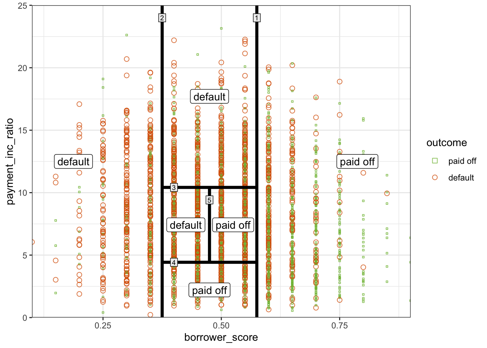
Figure 6-5. Gini impurity and entropy measures
info <- function(x) {
info <- ifelse(x == 0, 0, -x * log2(x) - (1 - x) * log2(1 - x))
return(info)
}
gini <- function(x) {
return(x * (1 - x))
}
x <- 0:50 / 100
impure <- bind_rows(
tibble(p = x, impurity = 2 * x, type = "Accuracy"),
tibble(p = x, impurity = gini(x) / gini(0.5) * info(0.5), type = "Gini"),
tibble(p = x, impurity = info(x), type = "Entropy")
)
graph <- ggplot(data = impure, aes(x = p, y = impurity, linetype = type, color = type)) +
geom_line(size = 1.5) +
guides(linetype = guide_legend(keywidth = 3, override.aes = list(size = 1))) +
scale_x_continuous(expand = c(0, 0.01)) +
scale_y_continuous(expand = c(0, 0.01)) +
theme_bw() +
theme(legend.title = element_blank())
graph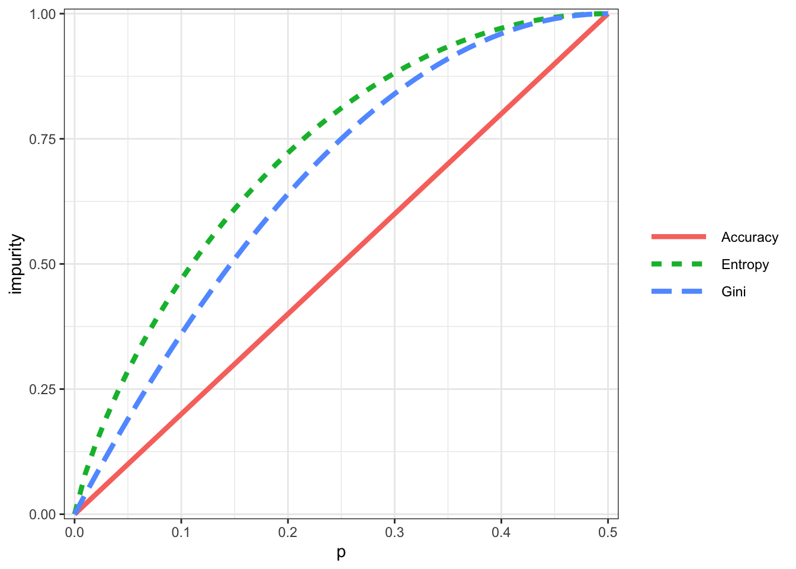